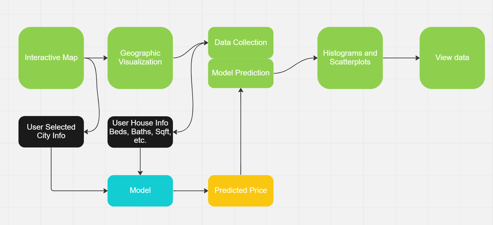
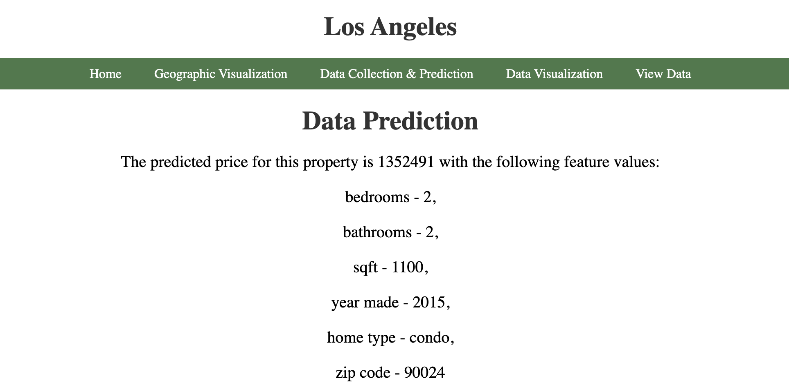
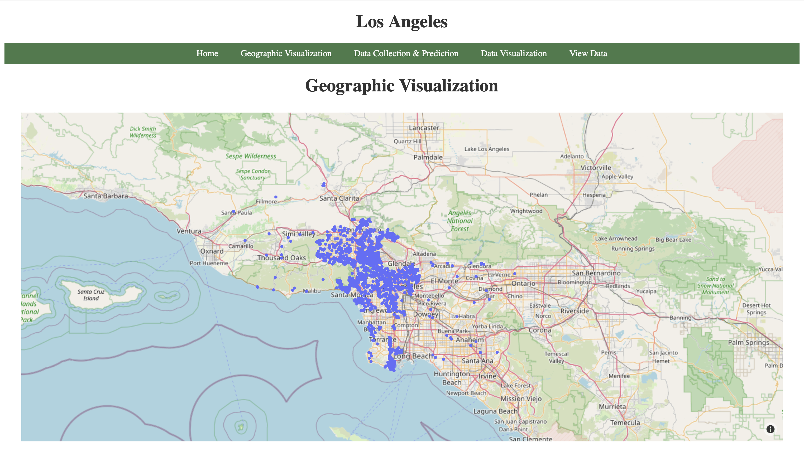
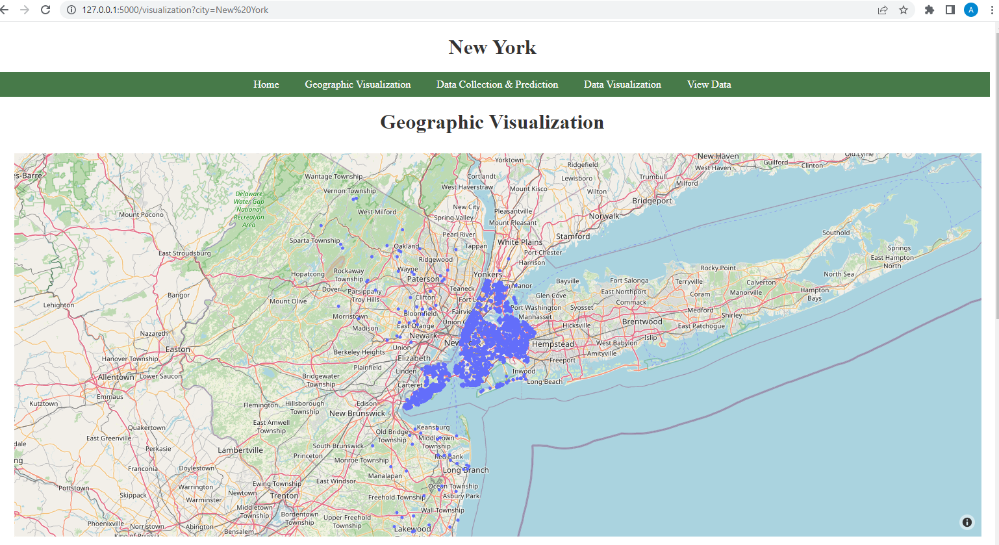
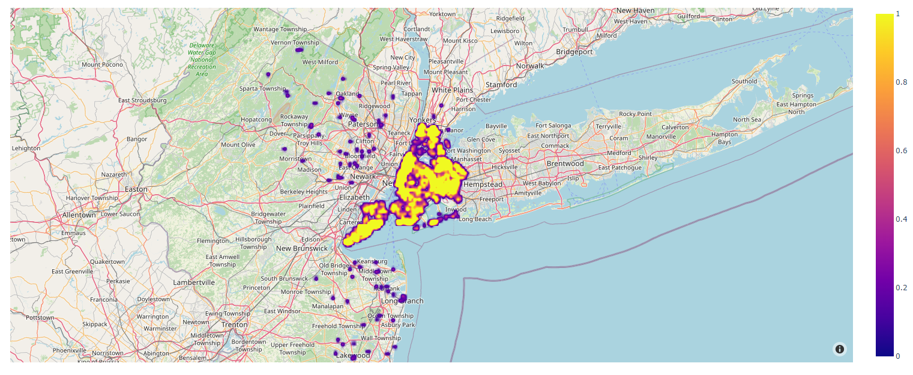
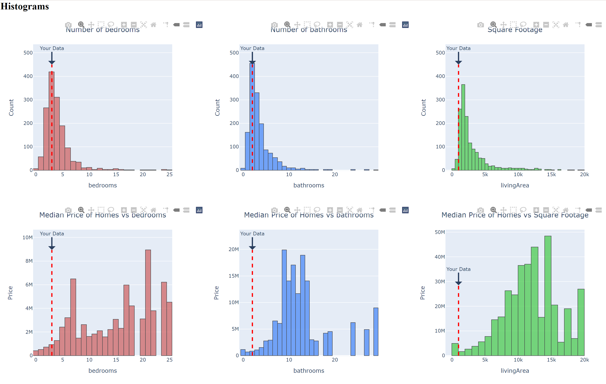

def mapbox(name, **kwargs):
"""
Creates a mapbox of all the data points scraped for the name (city name) parameter
Args: name -- a city to be used for the geographic visualization,str
**kwargs -- other parameters to filter the data to update the visualization
Returns: A json with the mapbox figure
"""
df = pd.read_csv(f"Datasets/{name}.csv") #Reads the data
center = {'lat': np.mean(df['latitude']), 'lon': np.mean(df['longitude'][0])} #Finds the center of the map
for key, value in kwargs.items():
if(key == "feature"):
feature = value
if(key == "number"):
num = value
if num != '':
num = int(num)
df = df[df[feature] == num] #Filters the data for specific features having a set value. Ex Bathrooms = 2 or Bedrooms = 3
if(key == "feature_type"):
feature_type = value
if feature_type != []:
df = df[df["homeType"].isin(feature_type)] #Filters the data to only include specific home types
if(key == "feature_min_max"):
feature_min_max = value
if(key == "min"):
minimum = value
if minimum != '':
minimum = int(minimum)
df = df[df[feature_min_max] >= minimum] #Filters the data for specific features having a set minimum value. Ex Min Price = 100k or Min Sqft = 2000
if(key == "max"):
maximum = value
print(maximum, feature_min_max)
if maximum != '':
maximum = int(maximum)
df = df[df[feature_min_max] <= maximum] #Filters the data for specific features having a set max value. Ex Max Price = 250k or Max Year Built = 2010
#Creates plotly scatter mapbox using data with/without added filters
fig = px.scatter_mapbox(df,
center = center,
hover_data = ["address/city","price", 'bathrooms', 'bedrooms',
'homeType'],
lat = "latitude",
lon = "longitude",
zoom = 8,
height = 600,
mapbox_style=kwargs.pop("style", "open-street-map"))
fig.update_layout(margin={"r":30,"t":10,"l":30,"b":0}) #sets the margin
return json.dumps(fig, cls=plotly.utils.PlotlyJSONEncoder) #returns the jsonOverview
The goal of this project was for users to understand the distribution of homes for sale on Zillow. Typically, prospective home buyers and sellers go to Zillow to find similar homes in order to gain an understanding of a given house’s value. Our project would give users a better understanding as it would explain the entire housing market for a given city. This includes geographic visualizations, histograms and scatterplots, and a predictive model that works with user data. We decided to limit our focus to the top ten major cities in the United States: Los Angeles, San Antonio, Philadelphia, San Diego, Houston, Dallas, Phoenix, New York, Chicago, and San Jose. Using the API, we were able to obtain information on 1500 homes for each city with 30 features.
Our website has the following components: advanced machine learning, dynamic features, and complex visualizations.

There are 5 pages to our website. First is an interactive map for users to select a city of interest. Second is geographic data visualization consisting of an interactive scatterplot, an interactive heatmap, and customizable filters for the user to understand the data. The next page is the data collection and prediction page. The user can enter housing information like number of bedrooms, year made, etc. and see our machine learning model’s predicted sale price. The fourth page is the data visualization, where users can compare their entered data to the distribution of homes in the selected city. We provide histograms and scatterplots that can be adjusted to the user’s preference. Finally, we also allow the user to view the raw data on the last page which includes variables we did not use for model building.
Link to GitHub Repo: Git Repo
Technical Components
Machine Learning Model
Because the user is inputting mostly numerical values (e.g. the number of bedrooms) and the goal is to accurately model the price value of that specific home, our group decided to utilize a regression model. To do this, we first needed to clean/impute the missing values in our dataset by using the mean of each column. After data preprocessing, we proceeded with splitting our data into predictor variables and target variables, then split each of these into training, validation, and testing data respectively.
For determining actual model itself, we used a nice tool called lazypredict in order to run through many regression models under scikit-learn and evaluate their accuracies. (Read more about its description here: https://pypi.org/project/lazypredict/). This way, we were able to increase efficiency and produce an organized table with the R-squared value and RMSE (Root-mean-square-error) of each model.
The following code demonstrates how lazypredict was implemented:
pip install lazypredict # first install the library
import lazypredict
from lazypredict.Supervised import LazyRegressor # this will import all regressors found
from sklearn.utils import all_estimators
from sklearn.base import RegressorMixin
chosen_regressors = [
'SVR',
'BaggingRegressor',
'RandomForestRegressor',
'GradientBoostingRegressor',
'LinearRegression',
'RidgeCV',
'LassoCV',
'KNeighborsRegressor'
]
REGRESSORS = [
est
for est in all_estimators()
if (issubclass(est[1], RegressorMixin) and (est[0] in chosen_regressors))
]
reg = LazyRegressor(verbose=0, ignore_warnings=False, custom_metric=None,
regressors=REGRESSORS)
models, predictions = reg.fit(X_train, X_test, y_train, y_test)
print(models)As seen in the above code, it is important to note that we did not run through all 42 regression models available through
lazypredict. There are mainly two reasons: the first was that some regressors did not match with our input dimensions and the second was that some regressors just took too long to execute and we were not able to produce accurate results in the end. Thus, we picked out 8 that made the most sense in terms of our data.
After running through 8 selected regressors, we ordered them based on their adjusted R-squared (coefficient of determination) and RSME values that indicate how well the model is fitting our data. The top result (the one with the highest R-squared value and the lowest RSME value) was the BaggingRegressor; therefore, we defined model1 as follows:
model1 = BaggingRegressor(max_features=1.0,
n_estimators=10,
bootstrap=True,
random_state=25)
model1.fit(X_train, y_train)Now, to implement this model into our dynamic website, we used the pickle module to save and transfer over the model. The following code demonstrates the process:
import pickle
with open('Model/model1.pkl', 'rb') as f:
model = pickle.load(f)
price = model.predict(pd.DataFrame({
'address/zipcode': [zipcode],
'bathrooms': [bed],
'bedrooms': [bath]
})) To see how this model actually functions on the webpage, the following image shows how the model is implemented and what the user can expect after inputting certain information about a house:

We picked Los Angeles as our target city, and the user is able input data points (number of bedrooms, bathrooms, square feet, year made, home type, and zipcode) through the data collection page. In this particular case, the values 2, 2, 1100, 2015, condo, and 90024 were entered, respectively, and our model was able to predict a price of $1,352,491. Users can play around with the input values to see various predictions.
Dynamic Website
We built a dynamic website using Flask that allows users to see housing data visualizations for the ten largest cities in the U.S. and get price predictions for their own home. On the home page is a map of the U.S. where the user can click on their desired city. This takes them to a page with geographic visualization of the housing data using plotly. The user can also customize the visualization by applying filters and submitting the form on the bottom of the page.

In the Data Collection & Prediction page, the user can enter the data for their own home to receive a price prediction generated by a machine learning model. Then, in the Data Visualization page, we used plotly to create graphs to visualize the data distribution for the current city. The user can also see where their own data lies alongside other homes in the same city. In the View Data page, The user can also view the raw data we collected.
The following is a function (located in app.py) that renders the template for data collection that supports GET and POST methods. This is also where we use the model to make price predictions. We used ‘request.form’ in order to get the user entered information in real time and used ‘session’ dictionary in order to save the information for use on other pages. Finally, we used ‘render_template’ with the saved information to dynamically change the website.
```{python}
def data_collection():
'''
Renders template for data collection
Uses model to predict house price from user input
Args: None
Returns: Rendered_template
'''
if request.method == 'GET': #checks if the method is GET
city = request.args.get('city') #gets selected city
return render_template('data_collection.html', city=city,
prediction = False)
else: #checks if the method is POST
city = request.args.get('city') #gets city
bed=request.form["bed"] #gets bed
session['bed_info'] = bed #saves bed
bath=request.form["bath"] #gets bath
session['bath_info'] = bath #saves bath
sqft=request.form["sqft"] #gets sqft
session['sqft_info'] = sqft #saves sqft
year_made=request.form["year_made"]
home_type = request.form['home_type']
zipcode = str(request.form["zipcode"])
with open('Model/model1.pkl', 'rb') as f:
model = pickle.load(f) #Loads the model for prediction
price = model.predict(pd.DataFrame({ #Predicted the house price using zipcode, bed count, and bath count
'address/zipcode': [zipcode],
'bathrooms': [bed],
'bedrooms': [bath]
}))
return render_template('data_collection.html', city = city, #renders the template with the predicted price
prediction = True,
price = int(price[0]),
bed=bed, bath=bath, sqft=sqft,
year_made=year_made,
home_type=home_type,
zipcode=zipcode)
```Complex Data Visualizations
The website contains two pages for data visualization - one for geographic representation and another for histogram and scatter plot visualizations.
The geographic visualization page contains two graphs utilizing Plotly’s Mapbox platform. The user can navigate to this page by clicking on one of the cities on the home page. This would display the default graphs for the entire data of that city. The first visualization is similar to Zillow’s visualization graph. It provides some valuable insights into the data that has been used to train the model. The user can hover over data points and check out the number of bedrooms, bathrooms, sqft, and home type. The second graph utilizes Plotly’s density Mapbox platform. It shows how dense the data points are in the given region. Here is an example of how the graphs look like for the city of New York.   The geographic visualization page also contains filters that can be used by the user to generate custom geographic visualizations. The user can choose to display only the properties with certain number of bedrooms or bathrooms, adjust the range for price, sqft, or year made, select the home type and the style of the map. Here is the function that has been used for making the first geographic graph (It is located in the myGraph.py module which was imported in app.py). The function that had been used for making the second graph is almost exactly the same. The only difference lies in the choice of Plotly’s platform, between Mapbox and Density Mapbox.
The function reads the data for the city (uses the name parameter as the name of the city). It finds the center of the plot which is necessary for displaying the city on the map even if no data points are left after filtering the data. This function accepts a set of key value arguments which act as filters mentioned above. These filters are applied next and a plot is created. After all this is done, the function creates a json file which will be used by the jinja template to render the graph. We looped through all key value pairs, checked if a specific pair was present with boolean logic, subsetted our data frame based on the filter, and finally constructed the scatterplot with the ‘px.scatter_mapbox’ function.
The histogram and scatterplot data visualization page provides the user with 6 histograms and 3 scatterplots. The purpose of this page was to show where the user’s home information compares to the rest of the housing market. The first three scatterplots show the number of homes compared to bedrooms, bathrooms, and square footage. The next three scatter plots show the median price of homes compared to bedrooms, bathrooms, and square footage. The three histograms show pairwise count plots for the aforementioned features. Once again, these were constructed in plotly.
 
All figures are updated with the user’s current entered information. The figures contain markers such as dotted lines and circles that indicate where the user’s data falls on the distribution. The following code snippet shows how the first 3 histograms were made (It is located in the myGraph.py module which was imported in app.py).
def histogram_count(name, feature, user_info, color):
"""
Creates the count histograms vs a feature and returns a json
Args: name -- a city to be used for the geographic visualization, str
feature -- a column of the dataframe to be visualized, str
user_info -- a variable of the user entered information
color -- a color for the visualization, str
Returns: A json of the visualization
"""
df = cleaning(name) #Cleans the dataframe
highest_value = 450 # marker height for the user entered data
fig = px.histogram(df, x=feature, width = 500, color_discrete_sequence=color) #Creates the histogram using the feature and color
fig.add_shape(type="line",x0=user_info, y0=0, x1=user_info, y1=highest_value,line=dict(color="red", width=3, dash="dash")) #Adds a dotted line marker
fig.add_annotation(x=user_info, y=highest_value, ax=0, ay=-40,text="Your Data",arrowhead=1, arrowwidth=3, showarrow=True) #Adds a comment "your data" above the marker
fig.update_traces(marker_line_color="black", marker_line_width=1, opacity=0.7) #Adjusts the figure and marker appearence
if feature == "livingArea":
fig.update_layout(title={"text": "Square Footage ", "x": 0.5}, yaxis_title="Count") #Renames the axis
else:
fig.update_layout(title={"text": "Number of " + feature, "x": 0.5}, yaxis_title="Count") #Renames the axis
return json.dumps(fig, cls=plotly.utils.PlotlyJSONEncoder) #returns the jsonThe function takes in the name of the city of interest, the feature to be plotted (i.e bathrooms, bedrooms), the user data that was entered in previously, and a color that we picked for the visualization. The function then cleans the data removing outliers, creates the visual, adds the custom marker (in this case, the dotted line), changes the appearance of the figure with the color and finally titles the plot. We coded this by first calling our cleaning function, then calling ‘px.histogram’ with our dataframe, feature of interest, and plotly color. To add the markers, we used the ‘add_shape’ function where the location of the marker is set by the user_info parameter. Finally, we customized the visualization with the ‘add_annotation’ function which adds the text “your data” above the user marker and ‘update traces’ function which sets the marker color to black and changes the opacity of the figure.
Conclusion and Limitations
We hope for this website to be useful for people looking to sell their house or exploring various housing options in the ten largest cities in the U.S. With our multiple visualizations and a predictive regression model ingrained on our website, the user is able to get a comprehensive experience of not only seeing what the market is around them, but how the market looks all across the country. However, we must also consider the possible ethical ramifications of this project. Having all the data accessible in easy to understand visualizations could make it easy for companies or the wealthy to buy up cheap housing. This could end up displacing the current inabitants and lead to gentrification. Furthermore, as our model is certainly not 100% accurate, homeowners/buyers might end up with slightly incorrect estimations, leading to unreasonable expectations when selling or purchasing a home. It should also be noted that these are Zillow estimations which are notoriously overpriced.